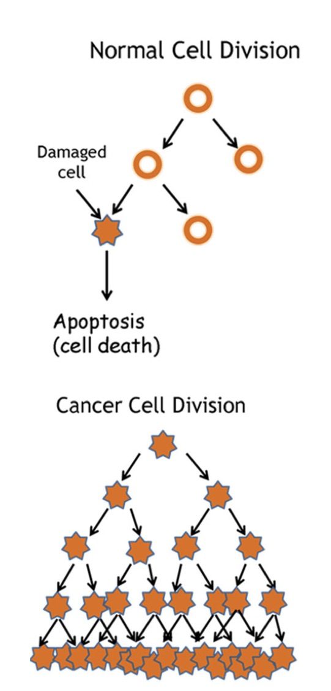
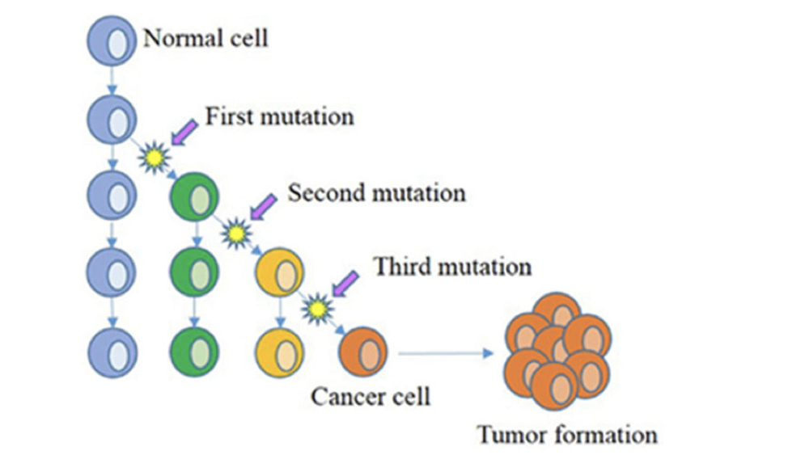
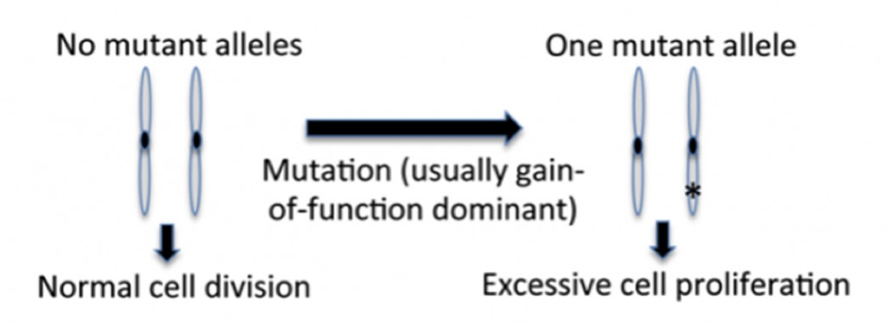
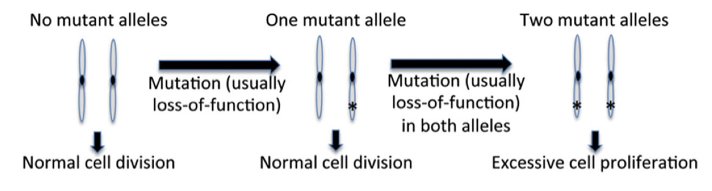

Cancer is "characterized by genetic defects in fundamental aspects of cell function leading to abnormal cell proliferation" (Matson, 2022). Still, the complexities of cancer span further than a single definition.
This site will study cancer from 3 lenses: the genetics of cancer, the medical treatment of tumors, and my personal perspective through a case study.
A cancerous cell will abnormally grow and divide while spreading metastatically.
(Matson, 2022)
Metastatic spread is defined as the spread of the tumor beyond the starting point. This type of spreading differentiates benign tumors from malignant tumors.
A benign tumor will grow and divide abnormally.
A malignant tumor will grow and divide abnormally while spreading beyond the site of origin. (Malignant tumors are cancerous.)
A borderline tumor shares characteristics of benign and malignant tumors. Sometimes, a borderline tumor is called a “low malignant potential” tumor (Borderline Ovarian Tumors, 2022).
Essentially, this type of tumor is more likely to grow back and spread than an average benign tumor. It is generally treated the same as a malignant tumor.
The cell cycle is a multiphase process (G1, S phase, G2, Mitosis) that allows a cell to grow and divide. There are 3 key checkpoints in this cycle:
The progression through these checkpoints is controlled by CDK-cyclins.
A CDK-cyclin is a complex of a cyclin and cyclin dependent kinase (CDK).
Apoptosis is programmed cell death. Normally, apoptosis protects cells from becoming cancerous.
Most cancerous cells develop due to abnormal gene expression or gene product mutations. Still, these cancerous cells require multiple mutations. Malignancy in particular requires random and independent mutations.
As an individual ages, the likelihood of cancer development increases because these mutations have the chance to accumulate.
(Matson, 2022)
There are two types of mutations: driver mutations and passenger mutations.
Driver mutations give a growth advantage to cells.
Passenger mutations do not have a direct addition to the cancer cell phenotype.
Proto-oncogenes and tumor suppressor genes are often found mutated in cancerous cells.
Proto-oncogenes code for products that promote cell growth and division. When mutated, it becomes an oncogene.
(Matson, 2022)
Tumor suppressor genes help regulate the checkpoints in the cell cycle. They also instigate apoptosis. When these genes are mutated, cells will continue to develop mutations and over proliferate.
(Matson, 2022)
Genetic mutations are not the only cause of cancer. Epigenetic changes affect gene expression and are related to cancer development.
Abnormal DNA methylation, histone modification, and noncoding RNAs are present in cancer cells.
An individual cannot truly inherit cancer, but they can inherit mutations that garner them more susceptible to cancer. Most of these heritable mutations are in tumor suppressor genes, but they are not enough to cause cancer. The mutation simply begins the process of cancer expression by providing the first mutation.
One example of a tumor predisposition syndrome is Li-Fraumeni syndrome. With this case, the p53 gene is affected.
The p53 gene is a tumor suppressor that can stop the cell cycle at various places. Without p53 functionality, cells are left unable to control cell growth. Around 50% of all cancers have this mutated gene.